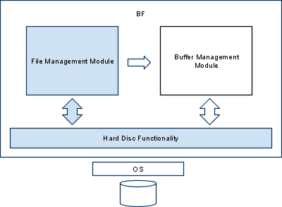

Πληροφορική & Τηλεπικοινωνίες K25
Ανάπτυξη Λογισμικού
Χειμερινό Εξάμηνο 2009-10
Καθηγητής Γιάννης Ιωαννίδης
Μέρος 1ο, 1/3: Μονάδα διαχείρισης αρχείων και σκληρού δίσκου.
(Ημερομηνία Παράδοσης: Τρίτη, 20/10/2009, 17:00)

Λειτουργίες σκληρού δίσκου - HDF (Hard disc functionality)
Εισαγωγή
Το επίπεδο Λειτουργιών Σκληρού Δίσκου (HDF) υλοποιεί μια Διεπαφή
Προγραμματισμού Εφαρμογών που επιτρέπει στα πιο πάνω επίπεδα να
επικοινωνούν με το σκληρό δίσκο έχοντας σαν μονάδα επικοινωνίας το
μπλοκ (block). Το συγκεκριμένο επίπεδο είναι το πιο χαμηλό στην
ιεραρχία. Έχει συναρτήσεις για το άνοιγμα, κλείσιμο, δημιουργία,
διαγραφή και έλεγχο ύπαρξης ενός αρχείου. Τα πιο πάνω επίπεδα
χρησιμοποιούν τις συναρτήσεις αυτές για την επικοινωνία με τα φυσικά
αρχεία στο δίσκο.
Οι ρουτίνες της συγκεκριμένης διεπαφής περιγράφονται παρακάτω. Τα
ονόματα όλων των ρουτινών αρχίζουν με το πρόθεμα HDF, ώστε να
υποδεικνύουν το γεγονός ότι πρόκειται για υλοποίηση αρχείου σε επίπεδο
λειτουργιών σκληρού δίσκου (HDF = Hard Disc Functionality). H γλώσσα
υλοποίησης είναι η C.
Οι περισσότερες ρουτίνες επιστρέφουν έναν ακέραιο αριθμό, όπου αρνητική
τιμή σημαίνει ότι έχει προκύψει κάποιο σφάλμα. Υπάρχουν διάφοροι
κωδικοί σφαλμάτων στο επίπεδο HDF, οι οποίοι περιγράφονται στο τέλος
της εκφώνησης.
Επίσης, το επίπεδο είναι υπεύθυνο και για την επικοινωνία με το δίσκο
σε ακέραιες μονάδες block. Συγκεκριμένα, αναλαμβάνει το διάβασμα και
την εγγραφή συγκεκριμένων block σε ένα αρχείο σε θέσεις που του έχουν
υποδειχτεί. Οι ενέργειες αυτές πραγματοποιούνται με ολόκληρα blocks και
πρέπει να ολοκληρώνονται επιτυχώς για τη μονάδα αυτή. Οι ρουτίνες αυτές
δεν πραγματοποιούν κανέναν απολύτως έλεγχο εσωτερικά, τον οποίο αφήνουν
για τα πιο πάνω επίπεδα.
Ρουτίνες Υλοποίησης της διεπαφής σκληρού δίσκου
HDF_OpenFile()
int HDF_OpenFile(
char* fileName,
FILE** file);
Ανοίγει το αρχείο με όνομα fileName και θέτει το αναγνωριστικό του
αρχείου από το λειτουργικό σύστημα στη μεταβλητή file. Επιστρέφει
BFE_OK ή κωδικό σφάλματος.
HDF_CloseFile()
int HDF_CloseFile(
FILE* file);
Κλείνει το αρχείο που δίνεται ως παράμετρος. Επιστρέφει BFE_OK ή κωδικό σφάλματος.
HDF_CreateFile()
int HDF_CreateFile(
char* fileName);
Δημιουργεί ένα νέο αρχείο με όνομα fileName. Επιστρέφει BFE_OK ή κωδικό σφάλματος.
HDF_DestroyFile()
int HDF_DestroyFile(
char* fileName);
Διαγράφει το αρχείο με όνομα fileName από το δίσκο. Επιστρέφει BFE_OK ή κωδικό σφάλματος.
HDF_ExistsFile()
BOOLEAN HDF_ExistsFile(
char* fileName);
Ελέγχει αν το αρχείο με όνομα fileName υπάρχει ήδη. Επιστρέφει TRUE αν υπαρχει, FALSE διαφορετικά.
HDF_ReadBlock()
int HDF_ReadBlock(
int blockIndex ,
char* blockBuf,
FILE* file);
Διαβάζει το block με αριθμό blockIndex από το αρχείο file. Το
περιεχόμενο που διαβάστηκε τοποθετείται στη μεταβλητή blockBuf.
Επιστρέφει BFE_OK ή κωδικό σφάλματος.
HDF_WriteBlock()
int HDF_WriteBlock(
int blockIndex,
char* blockBuf,
FILE* file);
Γράφει το περιεχόμενο της μεταβλητής blockBuf στη θέση που υποδεικνύει
ο αριθμός blockIndex του αρχείου file. Επιστρέφει BFE_OK ή κωδικό
σφάλματος.
Μονάδα διαχείρισης αρχείων - FΜM (File Management Module)
Εισαγωγή
Η μονάδα διαχείρισης αρχείων (FMM) υλοποιεί μια Διεπαφή Προγραμματισμού
Εφαρμογών που αναλαμβάνει τη διαχείριση των αρχείων που έχουν ζητηθεί
από το πιο πάνω επίπεδο χρησιμοποιώντας τις συναρτήσεις του HDF
επιπέδου για την υλοποίηση της λειτουργικότητάς του.
Το FMM περιλαμβάνει συναρτήσεις για τη διαχείριση αρχείων στη μνήμη και
διατηρεί πληροφορία σχετικά με τα ανοιχτά αρχεία. Επιτρέπει, κατ' αυτό
τον τρόπο το πολλαπλό άνοιγμα του ίδιου αρχείου, παρέχοντας ένα εύκολο
τρόπο για την πραγματοποίηση ενεργειών πάνω τους.
Επίσης, το πρώτο μπλοκ ενός αρχείου (π.χ., μπλοκ υπ΄ αριθμόν 0) θα
πρέπει να χρησιμοποιηθεί ως μπλοκ κεφαλίδα ώστε να αποθηκεύονται εκεί
διάφορα δεδομένα του αρχείου που κρίνονται χρήσιμα για το επίπεδο αυτό.
Το μπλοκ αυτό δεν είναι ορατό από τα πιο πάνω επίπεδα.
Οι ρουτίνες της συγκεκριμένης διεπαφής περιγράφονται παρακάτω. Τα
ονόματα όλων των ρουτινών αρχίζουν με το πρόθεμα FMM, ώστε να
υποδεικνύουν το γεγονός ότι πρόκειται για υλοποίηση αρχείου σε επίπεδο
διαχείρισης αρχείων (FMM = File Management Module). H γλώσσα υλοποίησης
είναι η C.
Οι περισσότερες ρουτίνες επιστρέφουν έναν ακέραιο αριθμό, όπου αρνητική
τιμή σημαίνει ότι έχει προκύψει κάποιο σφάλμα. Υπάρχουν διάφοροι
κωδικοί σφαλμάτων στο επίπεδο FMM, οι οποίοι περιγράφονται στο τέλος
της εκφώνησης.
Ρουτίνες Υλοποίησης της διεπαφής διαχείρισης αρχείων.
FMM_Init()
void FMM_Init();
Αρχικοποιεί τις εσωτερικές δομές που χρησιμοποιεί η μονάδα
διαχείρισης αρχείων. Αυτές περιλαμβάνουν περιγραφείς / αναγνωριστικά
αρχείων (του λειτουργικού συστήματος ή του FMM), ονόματα αρχείων κ.λπ.
FMM_Open()
int FMM_Open(
char* fileName);
Ανοίγει το αρχείο με όνομα fileName, καλώντας την
αντίστοιχη συνάρτηση του HDF επιπέδου. Για το ανοιχτό αρχείο, τοποθετεί
τις πληροφορίες που το αφορούν ώστε να αναγνωρίζεται σε μία διαθέσιμη
θέση στον πίνακα ανοιχτών αρχείων. Διαβάζει επίσης την κεφαλίδα του
αντίστοιχου αρχείου, εφόσον αυτή δεν υπάρχει ήδη στη μνήμη. Επιστρέφει
το αναγνωριστικό αρχείου (fileDescriptor) ή τον αντίστοιχο κωδικό
σφάλματος.
Ένα αρχείο μπορεί να έχει ανοιχτεί παραπάνω από μία φορές. Θα πρέπει να
κρατάτε στην μνήμη έναν πίνακα για όλα τα ανοιχτά αρχεία. Ο ακέραιος
που επιστρέφει η FMM_Open()
είναι ο αριθμός της θέσης του πίνακα που αντιστοιχεί στο αρχείο αυτό.
Σ' αυτόν τον πίνακα θα κρατάτε ο,τιδήποτε σχετικό κρίνετε ότι πρέπει να
είναι άμεσα διαθέσιμο για κάθε ανοιχτό αρχείο (π.χ., γενικές
πληροφορίες για το αρχείο από το μπλοκ-κεφαλίδα του, το αναγνωριστικό
του αρχείου έτσι όπως έχει ανοιχθεί από το λειτουργικό σύστημα, κτλ. -
χωρίς τα παραπάνω να θεωρούνται απαραίτητα). Μπορείτε να υποθέσετε ότι
οποιαδήποτε στιγμή δεν θα υπάρχουν περισσότερα από MAXOPENFILES = 25 ανοιχτά αρχεία.
FMM_Close()
int FMM_Close(
int fileDesc);
Κλείνει το αρχείο με αναγνωριστικό fileDesc και το αφαιρεί
από τον πίνακα ανοικτών αρχείων. Γράφει την κεφαλίδα πίσω στο αρχείο,
αν έχουν γίνει αλλαγές σε αυτή.
FMM_IsOpen()
BOOLEAN FMM_IsOpen(
char* fileName);
Ελέγχει αν το αρχείο με όνομα fileName υπάρχει στον πίνακα των ανοιχτών αρχείων. Επιστρέφει TRUE ή FALSE.
FMM_IsValid()
BOOLEAN FMM_IsValid(
int fileDesc);
Ελέγχει αν το συγκεκριμένο αναγνωριστικό αρχείου είναι
σωστό (εντός ορίων, αντιστοιχεί σε θέση μνήμης ανοιχτού αρχείου etc).
Επιστρέφει TRUE ή FALSE.
FMM_GetFileInfoByName()
int FMM_GetFileInfoByName(
fileInfo_t* finfo);
Ψάχνει στον πίνακα των ανοιχτών αρχείων με βάση το όνομα
που έχει δοθεί ως παράμετρος μέσω του finfo. Γεμίζει το finfo με τις
υπόλοιπες πληροφορίες που αφορούν στο συγκεκριμένο αρχείο: το
αναγνωριστικό του αρχείου όπως δίνεται από το λειτουργικό και το fd.
Επιστρέφει BFE_OK ή κωδικό σφάλματος. Η δομή fileInfo_t περιγράφεται παρακάτω.
FMM_GetFileInfoByFD()
int FMM_GetFileInfoByFD(
fileInfo_t* finfo);
Ψάχνει στον πίνακα των ανοιχτών αρχείων με βάση το
αναγνωριστικό ανοικτού αρχείου που έχει δοθεί ως παράμετρος εντός του
struct. Γεμίζει το struct με τις υπόλοιπες πληροφορίες που αφορούν στο
συγκεκριμένο αρχείο: το αναγνωριστικό του αρχείου όπως δίνεται από το
λειτουργικό και το όνομα του αρχείου. Επιστρέφει BFE_OK ή κωδικό
σφάλματος.
FMM_HEAD_IsValid()
BOOLEAN FMM_HEAD_IsValid(
int fileDesc,
int blockNum);
Ελέγχει από το header του ανοιχτού αρχείου με
αναγνωριστικό fileDesc, αν το μπλοκ που αντιστοιχεί θέση blockNum είναι
έγκυρο. Επιστρέφει TRUE ή FALSE.
FMM_HEAD_GetFirstBlock()
int FMM_HEAD_GetFirstBlock(
int fileDesc);
Ψάχνει στην κεφαλίδα του ανοιχτού αρχείου με αναγνωριστικό
fileDesc και επιστρέφει τον αριθμό εκείνο που αντιστοιχεί στο πρώτο
έγκυρο block. Επιστρέφει BFE_OK ή κωδικό σφάλματος σε περίπτωση λάθους.
FMM_HEAD_GetNextBlock()
int FMM_HEAD_GetNextBlock(
int fileDesc,
int prev);
Ψάχνει στην κεφαλίδα του ανοιχτού αρχείου με αναγνωριστικό
fileDesc και επιστρέφει τον αριθμό που αντιστοιχεί στο πρώτο έγκυρο
block, μετά το block της θέσης prev. Δεν γίνεται κανένας έλεγχος για το
prev block. Επιστρέφει κωδικό σφάλματος σε περίπτωση λάθους.
FMM_HEAD_GetFirstEmpty()
int FMM_HEAD_GetFirstEmpty(
int fileDesc);
Ψάχνει στην κεφαλίδα του ανοιχτού αρχείου με αναγνωριστικό
fileDesc και επιστρέφει τον αριθμό που αντιστοιχεί στο πρώτο *μη*
έγκυρο (άδειο / μη χρησιμοποιούμενο) block.
FMM_HEAD_Set()
int FMM_HEAD_Set(
int fileDesc,
int blockNum,
BOOLEAN value);
Θέτει στην κεφαλίδα του ανοιχτού αρχείου με αναγνωριστικό
fileDesc την τιμή που αντιστοιχεί στο μπλοκ με αριθμό blockNum σε
value, για να ξέρει αν είναι valid ή όχι. Επιστρέφει κωδικό σφάλματος ή
BFE_OK.
Δομές δεδομένων
Επειδή η C δεν έχει τύπο boolean, ορίζουμε το παρακάτω απαριθμητικό:
typedef enum {
FALSE = 0,
TRUE = 1
}BOOLEAN;
Οι πληροφορίες που αφορούν ένα αρχείο ορίζονται με την παρακάτω δομή:
typedef struct{
char filename[MAX_FILE_NAME];
FILE* fp;
int fd;
}fileInfo_t;
Κωδικοί λαθών
#define BFE_OK
0 /* OK */
#define BFE_NOMEM
-1 /* Δεν υπάρχει διαθέσιμη
μνήμη */
#define BFE_CANNOTOPENFILE
-2 /* Αδύνατο το
άνοιγμα του αρχείου */
#define
BFE_CANNOTCLOSEFILE
-3 /* Αδύνατο το κλείσιμο του αρχείου */
#define BFE_CANNOTCREATEFILE
-4 /* Αδύνατη η δημιουργία του αρχείου */
#define
BFE_INCOMPLETEREAD
-5 /* Ημιτελές διάβασμα */
#define
BFE_INCOMPLETEWRITE
-6 /* Ημιτελές γράψιμο */
#define
BFE_FILEEXISTS
-7 /* Το αρχείο υπάρχει ήδη */
#define
BFE_NOBUF
-8 /* Έλλειψη χώρου στην ενδιάμεση
μνήμη */
#define
BFE_FILEOPEN
-10 /* Το αρχείο είναι ήδη ανοιχτό */
#define
BFE_FD
-11 /* Λανθασμένο αναγνωριστικό αρχείου */
#define
BFE_FILENOTEXISTS
-12 /* Το αρχείο δεν υπάρχει */
#define
BFE_FTABFULL
-13 /* Λίστα ανοιχτών αρχείων πλήρης */
#define
BFE_HEADOVERFLOW
-14 /* Λανθασμένος αριθμός */
#define
BFE_BLOCKFIXED
-15 /* Μπλοκ ήδη "καρφωμένο" στη μνήμη */
#define
BFE_BLOCKUNFIXED
-16 /* Μπλοκ ήδη ξεκαρφωμένο */
#define
BFE_EOF
-17 /* Τέλος αρχείου */
#define BFE_FILEHASFIXEDBLOCKS -18 /* Το αρχείο έχει καρφωμένα block */
#define
BFE_BLOCKFREE
-19 /* Μπλοκ ήδη διαθέσιμο προς ανακύκλωση */
#define
BFE_BLOCKINBUF
-20 /* Μπλοκ ήδη στη μνήμη */
#define BFE_BLOCKNOTINBUF -21 /* Μπλοκ όχι στη μνήμη */
#define
BFE_INVALIDBLOCK
-22 /* Λανθασμένος κωδικός block */
#define BFE_CANNOTDESTROYFILE -23 /* Αδύνατη η καταστροφή του αρχείου */
#define
BF_BUFFER_SIZE
20 /* Μέγεθος της ενδιάμεσης μνήμης
σε block */
#define
MAXOPENFILES
25 /* Μέγιστο πλήθος ανοιχτών
αρχείων */
#define
BF_BLOCK_SIZE
1024 /* Μέγεθος ενός block σε bytes */
#define
MAX_BLOCKS
8192 /* Μέγιστο πλήθος από διαθέσιμα block ανά
αρχείο */
#define
MAX_FILE_NAME
256 /* Μέγιστο μέγεθος για όνομα ενός αρχείου */
Σχόλια για την Υλοποίηση
Θα
πρέπει να ορίσετε κάποιες δομές (π.χ., απλούς πίνακες ή πίνακες
κατακερματισμού) στο πρόγραμμά σας. Σε αυτές θα κρατάτε όποια στοιχεία
χρειάζεστε για τα ανοιχτά αρχεία, με κάθε (μη κενή) θέση του πίνακα να
περιέχει ή να δείχνει προς τα στοιχεία που αντιστοιχούν σε ένα αρχείο.
Αν ο πίνακας είναι γεμάτος και ζητηθεί και άλλο άνοιγμα αρχείου, το
αντίστοιχο μήνυμα σφάλματος πρέπει να παραχθεί. Εσείς
μπορείτε να υλοποιήσετε τα πράγματα διαφορετικά αν θέλετε. Οι διεπαφές
των ρουτινών και η λειτουργικότητά τους είναι τα μόνα πράγματα που δεν
μπορείτε να αλλάξετε, όπως επίσης και η δομή fileInfo_t.
Κάθε συνάρτηση
πρέπει να θέτει μία καθολική μεταβλητή του προγράμματος BF_errno στον
κατάλληλο κωδικό σφάλματος, ανάλογα με την έκβασή της εκτέλεσής της
(της συνάρτησης). Το σφάλμα αυτό επιστρέφεται στα πιο πάνω επίπεδα για
την κατάλληλη διαχείριση του.
 Σχολιασμός, Έλεγχος Σφαλμάτων, και Γενική Μορφοποίηση
Σχολιασμός, Έλεγχος Σφαλμάτων, και Γενική Μορφοποίηση
Όπως πάντοτε, αναμένεται καλός σχολιασμός του προγράμματος, και
εσωτερικός (ανάμεσα στις γραμμές κώδικα) και εξωτερικός (στην αρχή κάθε
ρουτίνας). Ένας γενικός κανόνας είναι να σχολιάζετε τα προγράμματά σας
σαν να πρόκειται να τα δώσετε σε κάποιον άλλον ο οποίος θα τα
επεκτείνει και ο οποίος δεν έχει ιδέα για το τι κάνατε όταν τα γράφατε
(και δεν μπορεί ούτε να σας βρει να σας ρωτήσει).
Επίσης, θα πρέπει να ελέγχετε για διάφορα σφάλματα που μπορούν να
προκύψουν και να βεβαιωθείτε ότι ο κώδικάς σας τερματίζει ομαλά, με
μηνύματα που έχουν νόημα, σε όλες τις εισόδους που ικανοποιούν την
παραπάνω περιγραφή.
Διαδικαστικές Λεπτομέρειες
Το τί ακριβώς θα παραδώσετε, πού θα βρείτε τα αρχεία με τα οποία
θα ελέγξετε τελικά το πρόγραμμά σας, κτλ., θα ανακοινωθεί σύντομα.
Τα προγράμματά σας θα πρέπει να δουλεύουν στα μηχανήματα του
τμήματος (είτε στα sun (Linux) είτε στα pc (Windows)) ώστε να μπορούν
να ελεγχθούν. Ακόμη και αν δουλέψετε σε δικούς σας υπολογιστές θα
πρέπει να βεβαιωθείτε ότι το τελικό αποτέλεσμα δουλεύει και εδώ τοπικά.
Η έκδοση της C που θα χρησιμοποιήσετε πρέπει να έχει ακέραιους των 4
bytes και να επιτρέπει αλλαγή ερμηνείας τύπου δεδομένων (type casting).